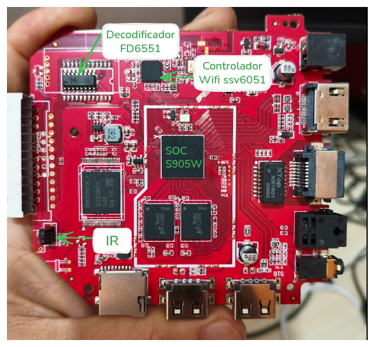

Do Android ao Armbian Linux — passo a passo direto
Receita Federal IFSC Amlogic S905W
Apresentador: Romulo de Aguiar Beninca
| Componente | Chip / Interface | Desafio no Linux |
|---|---|---|
| SoC | Amlogic S905W (Cortex-A53, Mali-450) | DTB correto para a placa P281 |
| Display frontal | FD6551 — bit-bang via GPIO (bits 27/29) | Driver proprio via /dev/mem |
| Wi-Fi | SSV6051 — SDIO, sem suporte mainline | Compilar driver out-of-tree para kernel 6.x |
| IR | Receptor em GPIOAO_7 — driver meson-ir | Overlay + mapeamento de scancodes |
| Armazenamento | eMMC ~7,5 GB | Migrar sistema do SD para eMMC |
Todos esses componentes foram mapeados a partir do DTB extraido do Android original e validados no Armbian.
| Risco no Android original | Como o Armbian resolve |
|---|---|
| Processos root desconhecidos em background | Sistema limpo, controle total do que executa |
Sistema de arquivos montado em rw (inseguro) | Montagem controlada e endurecimento |
| Versao mascarada: reporta Android 10, e Android 7.1.2 / kernel 3.14 | Kernel moderno 6.x mantido pela comunidade |
| Sem atualizacoes de seguranca | Atualizacoes via apt |
| Possiveis backdoors no firmware de fabrica | Sistema auditavel, repositorios abertos |
| PC x86 | TX9 / ARM SoC | |
|---|---|---|
| Quem descreve o hardware | UEFI/BIOS + ACPI | Device Tree Blob (.dtb) |
| Descoberta de dispositivos | PCI/PCIe — automatica | Memory-mapped — manual via DTB |
| Intervencao do usuario | Raramente | Precisa escolher/ajustar o .dtb |
Imagem pronta no cartao SD
Botao inferior + ligar
instal-aml.sh na eMMC
Servicos e Docker
tx9-display.service)tx9-ir.service)1.1 — Baixar a imagem (ja inclui tudo: Armbian + DTB + drivers + servicos + Docker):
https://drive.google.com/file/d/1u4GrDhsN_l2zTHFpy2P6BQBlMFfIhFet/view?usp=sharing1.2 — Baixar o script de gravacao:
wget https://rbeninca.github.io/tvbox/oficina/gravar-cartao.sh1.3 — Identificar o cartao e gravar:
# identifique o cartao SD (CUIDADO: confira o dispositivo!)
lsblk
# grave a imagem (substitua /dev/sdX pelo seu cartao)
sudo bash gravar-cartao.sh tx9-pro-armbian-reduzido.img /dev/sdXlsblk antes. Apos gravar, ele verifica automaticamente a integridade com cmp.
RATE=10M sudo bash gravar-cartao.sh tx9-pro-armbian-reduzido.img /dev/sdX
rootaluno123
Se a TV Box ainda estiver no Android e voce precisar do IP para conectar via rede, instale o app ifrede.apk — ele exibe o endereco de rede no display frontal da caixa.
https://rbeninca.github.io/tvbox/oficina/ifrede.apkAbra no navegador Android, baixe e instale. Pode ser necessario habilitar "Fontes desconhecidas".
wget https://rbeninca.github.io/tvbox/oficina/ifrede.apk
adb install ifrede.apk192.168.1.50).
Com o Armbian rodando pelo cartao SD, conecte-se e execute o script de instalacao:
# conecte via SSH (ou use o terminal local)
ssh root@IP_DA_TVBOX # senha: aluno123
# rode o script de instalacao na eMMC
/root/instal-aml.shO script copia o sistema do cartao para a memoria interna (eMMC), configura o bootloader e prepara tudo para funcionar sem o cartao.
Apos a instalacao:
lsblk deve mostrar / montado em mmcblk1p2 (eMMC) e nao em mmcblk0 (SD).
Apos o boot pela eMMC, confirme que tudo esta funcionando:
# sistema
uname -r # kernel 6.x
ip -br a # IP na rede
# display frontal
systemctl status tx9-display.service
tx9-display-show show_text "OK" --duration 3
# controle remoto IR
systemctl status tx9-ir.service
tx9-ir-listen # aperte botoes no controle
# Wi-Fi
lsmod | grep ssv6051
nmcli device wifi list| Servico | Verificacao | CLI |
|---|---|---|
| Display frontal | systemctl status tx9-display.service | tx9-display-show |
| Controle remoto IR | systemctl status tx9-ir.service | tx9-ir-listen, tx9-ir-map, tx9-ir-log |
| Wi-Fi SSV6051 | lsmod | grep ssv6051 | nmcli |
| Docker | systemctl status docker | docker run |
O Docker ja vem instalado. Teste e comece a usar:
# verificar se esta rodando
systemctl status docker
# teste rapido
docker run --rm hello-world
# subir um servidor web
docker run -d --name web -p 80:80 nginx
# acessar no navegador do notebook:
# http://IP_DA_TVBOXtx9-display-show show_text "DOCK" --duration 3
| Servico | tx9-display.service |
| Config | /etc/tx9-display/display.conf |
| CLI | tx9-display-show |
tx9-display-show show_text "BOOT" --duration 5
tx9-display-show scroll "Texto longo" --speed 0.3
tx9-display-show set_brightness 0x40
tx9-display-show clear| Servico | tx9-ir.service |
| Config | /etc/tx9-ir/ir_daemon.conf |
| CLI | tx9-ir-listen, tx9-ir-map, tx9-ir-log, tx9-ir-reload, tx9-ir-help |
sudo tx9-ir-listen # ver scancodes
sudo tx9-ir-map /etc/tx9-ir/ir_daemon.conf
sudo tx9-ir-reload
sudo tx9-ir-loginstal-aml.shtx9-display-show)tx9-ir-listen)docker run hello-world)/dev/sdX antes de gravarinstal-aml.shnmclitx9-ir-mapDescaracterizacao de TV Box TX9 Pro — Android para Armbian
Romulo de Aguiar Beninca
Projeto IFSC — Dispositivos destinados pela Receita Federal
Repositorio: github.com/rbeninca/tvbox
Slides completos: rbeninca.github.io/tvbox/oficina/slide-oficina.html
Este guia: rbeninca.github.io/tvbox/oficina/oficina-install.html
Perguntas?